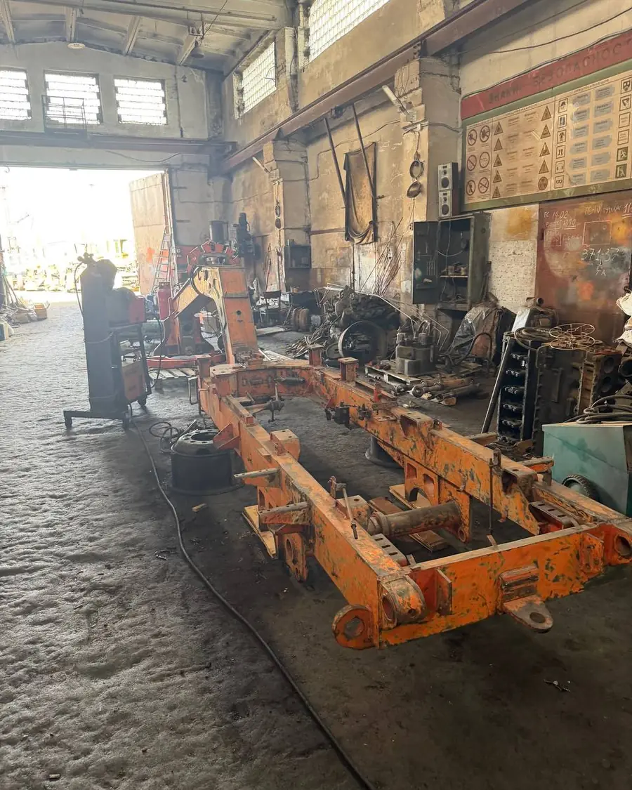
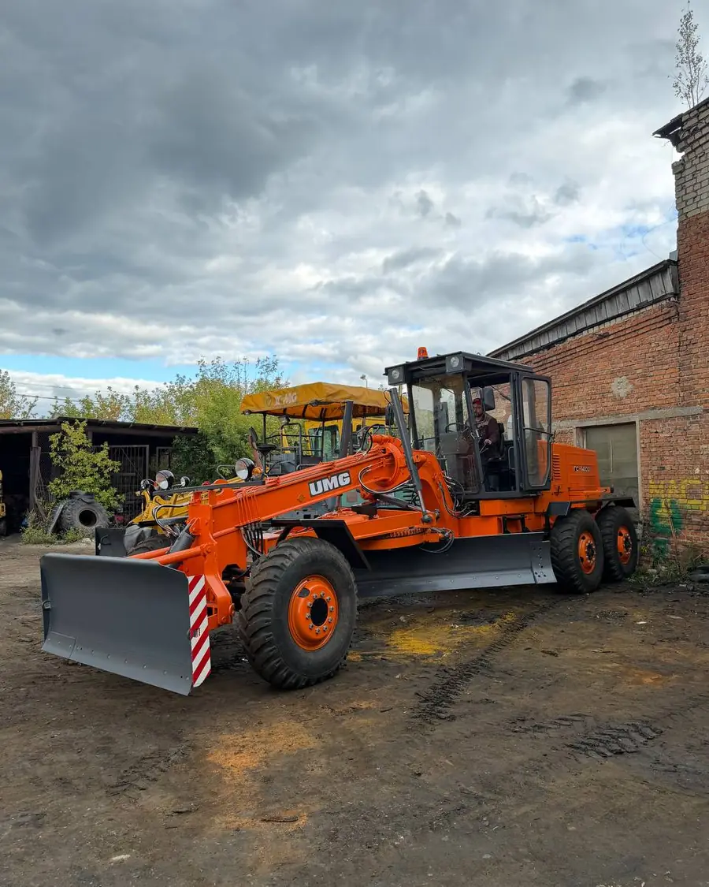
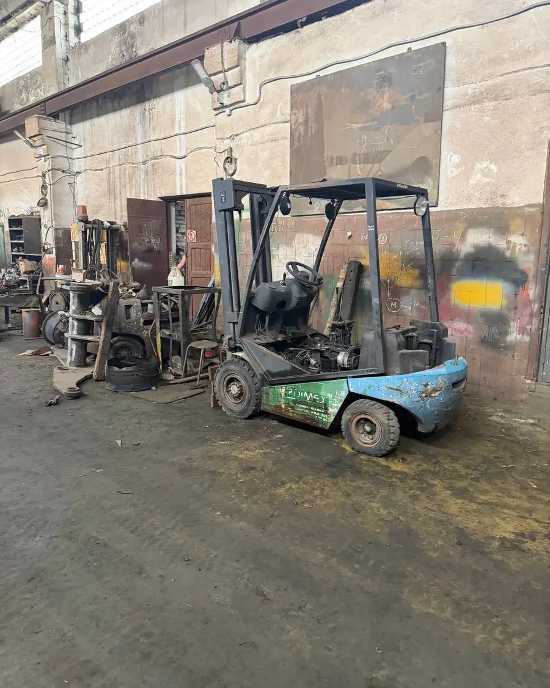
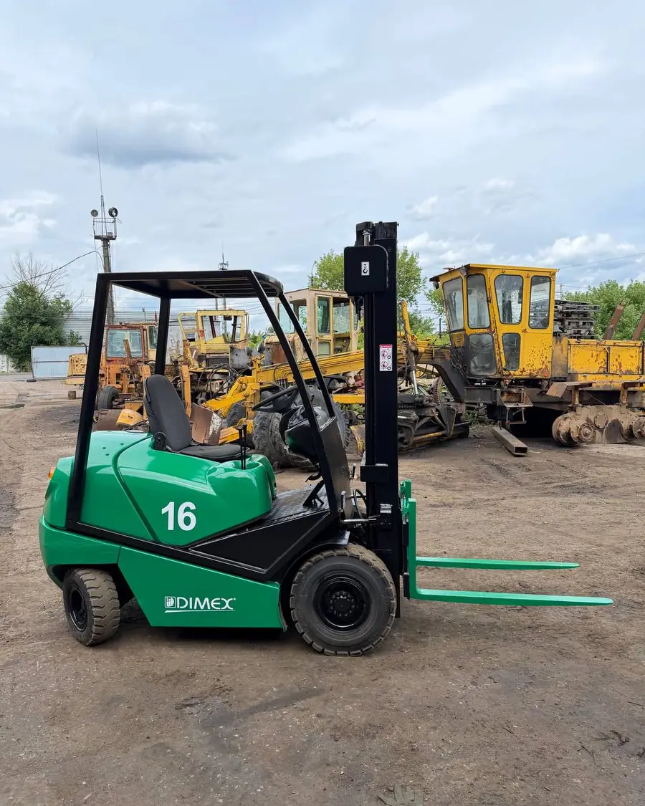
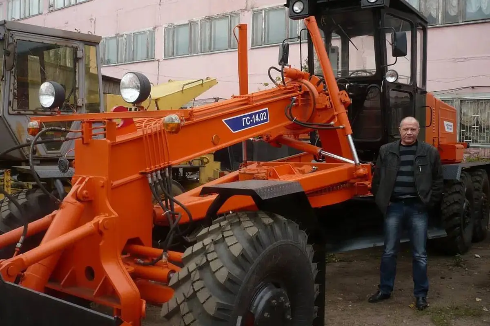
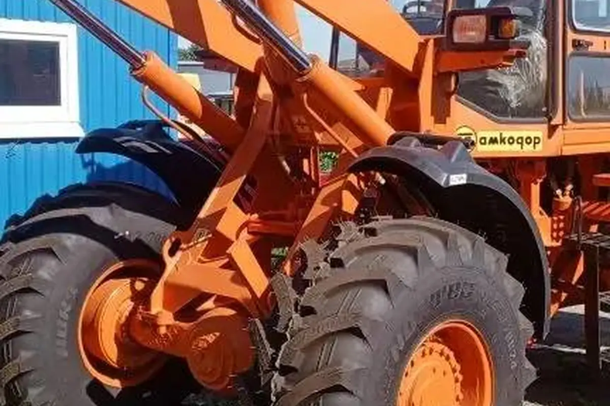
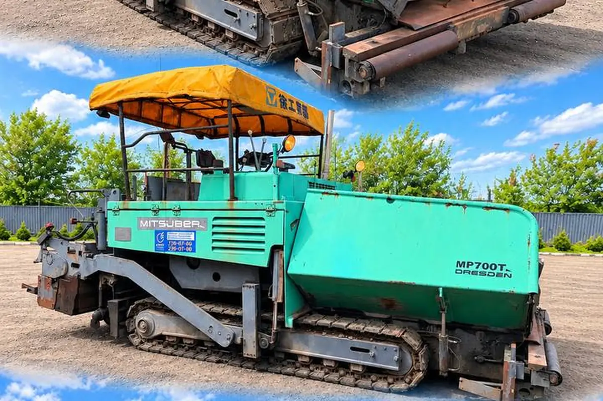
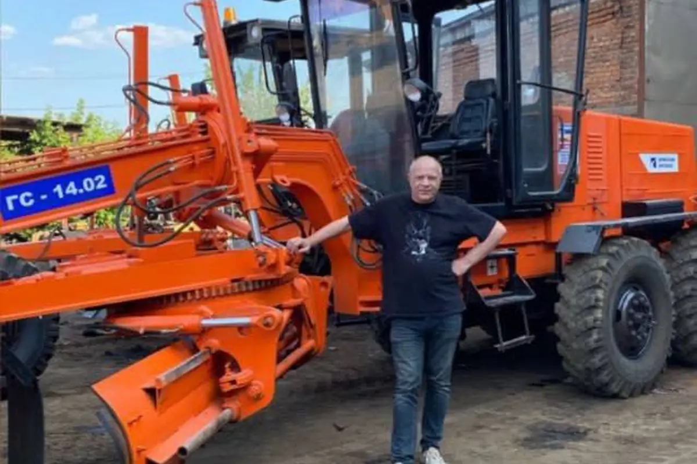
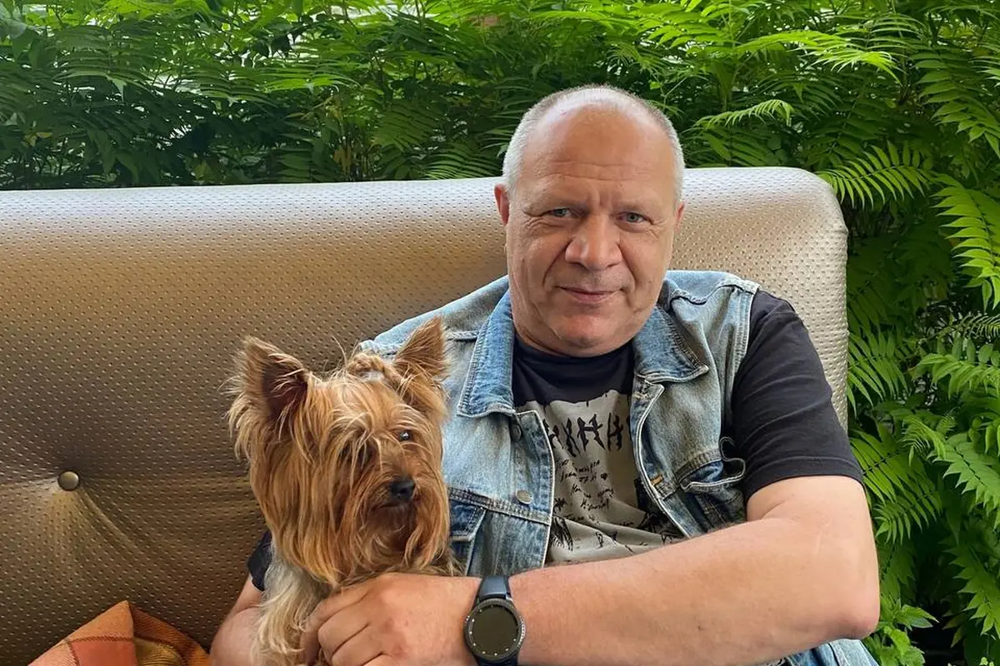

Автогрейдер ГС 14.02
Пришёл под полную переборку. Разобрали до рамы, восстановили геометрию, перебрали двигатель, КПП и гидравлику, поставили новый отвал и покрасили. Вышел на смену своим ходом.
Брянск · ул. Уральская, 109
Текущий и капитальный, любой сложности: ДЗ-143, ДЗ-180, ДЗ-122, ДЗ-98, ГС 14.02, ГС 18.07, ГС 25.09. И любая другая дорожно-строительная техника.
Разбираем машину полностью и восстанавливаем каждый узел. Прокрутите — увидите, что именно снимаем.
Фотографии с нашей площадки. Слева — как машина приехала, справа — как уехала.


Пришёл под полную переборку. Разобрали до рамы, восстановили геометрию, перебрали двигатель, КПП и гидравлику, поставили новый отвал и покрасили. Вышел на смену своим ходом.


Стоял в цеху с убитой гидравликой и проеденным кузовом. Перебрали двигатель и мачту, заменили цилиндры и шланги, вылечили металл, покрасили заново.
Короткие ролики с площадки: машины заведены и на ходу. Нажмите, чтобы открыть во весь экран.
Работаем по понятной схеме: сначала считаем, потом делаем. Без «вскрытие покажет» на каждом этапе.
Принимаем машину на площадке в Брянске или смотрим у вас. Разбираем узлы, замеряем износ, фиксируем, что живое, а что под замену. Коробки ZF смотрим компьютерной диагностикой.
Показываем список работ и деталей с ценой. Вы решаете объём: один узел, группа узлов или машина целиком. Цена договорная.
Расточка и гильзовка блока, шлифовка валов, ремонт КПП и ГМКПП, мостов, гидроцилиндров, сварка и усиление рамы, сочленение.
Собираем, выставляем зазоры и давления, обкатываем двигатель и гидравлику под нагрузкой. Что вылезло на обкатке — устраняем до сдачи.
Показываем работу узлов вживую, отдаём акт, перечень заменённых деталей и гарантию. Помогаем с погрузкой и доставкой.
После капремонта грейдер держит нож, не течёт и заводится в мороз. Это и есть разница между «перебрали» и «подкрасили и продали».

Дефектовку, расточку, наплавку, сборку и обкатку делаем сами на Уральской, 109. Ничего не отдаём на сторону — поэтому сроки зависят от нас, а не от чужой очереди.
Позвонить +7 (910) 743-09-75Фронтальные и вилочные: ремонт, продажа, запчасти. Самый большой раздел на площадке — держим 14 машин.
Погрузчики → 02Асфальтоукладчики, катки, бульдозеры, тракторы. От замены узла до полной переборки машины.
Что ремонтируем → 03Поставка запчастей для грейдеров всех марок. Выкупаем автогрейдеры под разборку, делаем ТО.
Подбор запчастей →Кроме ремонта держим на площадке готовые машины: автогрейдеры, фронтальные и вилочные погрузчики, асфальтоукладчики, катки. Каждую можно осмотреть и запустить до покупки.
 После капремонта
5 фото
После капремонта
5 фото

После капремонта 5 фото
В наличии видео · 5 фотоСвой цех, станочный участок и площадка для техники. Приезжайте смотреть — покажем машины в работе.


Настоящие отзывы с нашего магазина на Авито, слово в слово. Там их больше — и там же видно даты и сделки.
ЧЕЛОВЕК СЛОВА ! Произвёл капитальный ремонт грейдера ГС 14.02 . Всё отлично !!!
Максимально быстро отправили коробку на амкодор. Цена не изменилась в процессе обсуждения. Продавец постоянно был на связи. Коробку установил, всё проверил, работает как новая. Продавца рекомендую.
Приобрели хорошую технику, С людьми приятно иметь дело. Грамотно и компетентно все показали и объяснили.
Купил теплообменник на смд 31 созванивались, фото выслал, тут же отправил транспортной, всё быстро, цена приемлема, очень доволен что быстро решился вопрос так как нового в России не найти только б/у и то не везде
Очень оперативно отработали, быстро отправили фото, в этот же день отправили запчасть. З.Ч новая, не б/у, как и заявлено.
Без колл-центра и анкет. Скажите модель и что с машиной — сразу ответим, что можно сделать, сколько это займёт и во сколько обойдётся.
г. Брянск, ул. Уральская, 109. Приезжайте смотреть технику — место для трала есть, заезд свободный. Открыть на Яндекс.Картах →